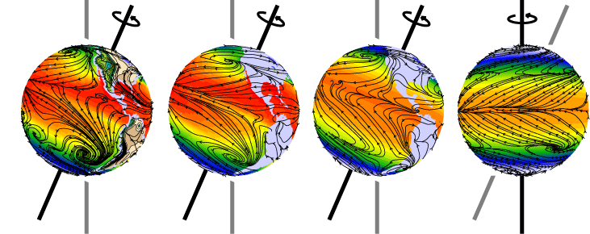

where Tmax = 27 C.
Note this represents a change from previous experiments using 2K. The larger perturbation is being recommended to evoke a larger model response.
Aquaplanets are Earth-like planets with a completely water-covered surface. This configuration has been used for a variety of applications in atmospheric and climate science, with some of its advantages discussed by Hoskins et al. (1999). The attractiveness of this simplified geography was also recognized by Lorenz, who wrote in 1967:
Within the collection of possible planetary atmospheres, one which is devoid of irregularities occupies a more central and fundamental position than one with any specific arrangement of irregularities. Aquaplanets have recently been used to investigate climate sensitivity of atmospheric general circulation models (Miura et al. 2005, Medeiros et al. 2008). Medeiros et al. (2008) use two GCMs to show that aquaplanets have similar tropical climate sensitivity as the more Earth-like configurations of the same models. This is suggested to be caused by similar low-cloud response in near-tropical latitudes in the Earth-like and aquaplanet configurations. This makes the aquaplanet a useful framework for model intercomparison of cloud effects.
The advantage of the aquaplanet configuration is the relative simplicity. Removing zonal asymmetry makes zonal averages meaningful, reducing the dimensionality of the analysis. Similarly, aquaplanets that are symmetric about the equator double the sampling for every latitude. The configuration recommended below removes seasonal variation and sea-ice as well as land and SST asymmetries, which also allows for quite short integrations since all the slowly varying components of the system are controlled. Finally, the aquaplanet can be used to isolate particular regimes. With the configuration discussed here, for example, the descending branch of the Hadley circulation is populated by trade wind cumulus conditions, without the effects of stratocumulus. This isolation allows increased sampling of particular regimes, providing robust statistics, and an idealized laboratory for understanding, e.g., tropical cloud effects.
Provided below are the requirements and recommendations for designing aquaplanet configurations comparable to those discussed in Medeiros et al. (2008). To simplify the climate perturbation, the recommended approach is to use a straightforward, global increase in SST. This yields similar results as those discussed in the paper, and retains the baroclinicity of the midlatitudes. The CMIP requirement is for three simulations: (1) a control aquaplanet, (2) a 4x CO2 simulation, and (3) a SST+4K simulation. [CMIP5]
The basic requirements are simply to create an aquaplanet configuration following the Aqua-Planet Intercomparison Project.
These are additional recommendations to make contributions more homogeneous.
The model output should follow recommendations for CFMIP-2, including satellite emulator packages (link) and with high-frequency (30min/timestep) output every 2.5 degrees of latitude along 0 degrees longitude. Previous studies (e.g., Medeiros et al. 2008) have principally used monthly mean output, but experience suggests daily mean output can provide a deeper look into the various cloud-related distributions. High-frequency output can be used for process-level studies as well as for driving column models, cloud system resolving models, and LES.